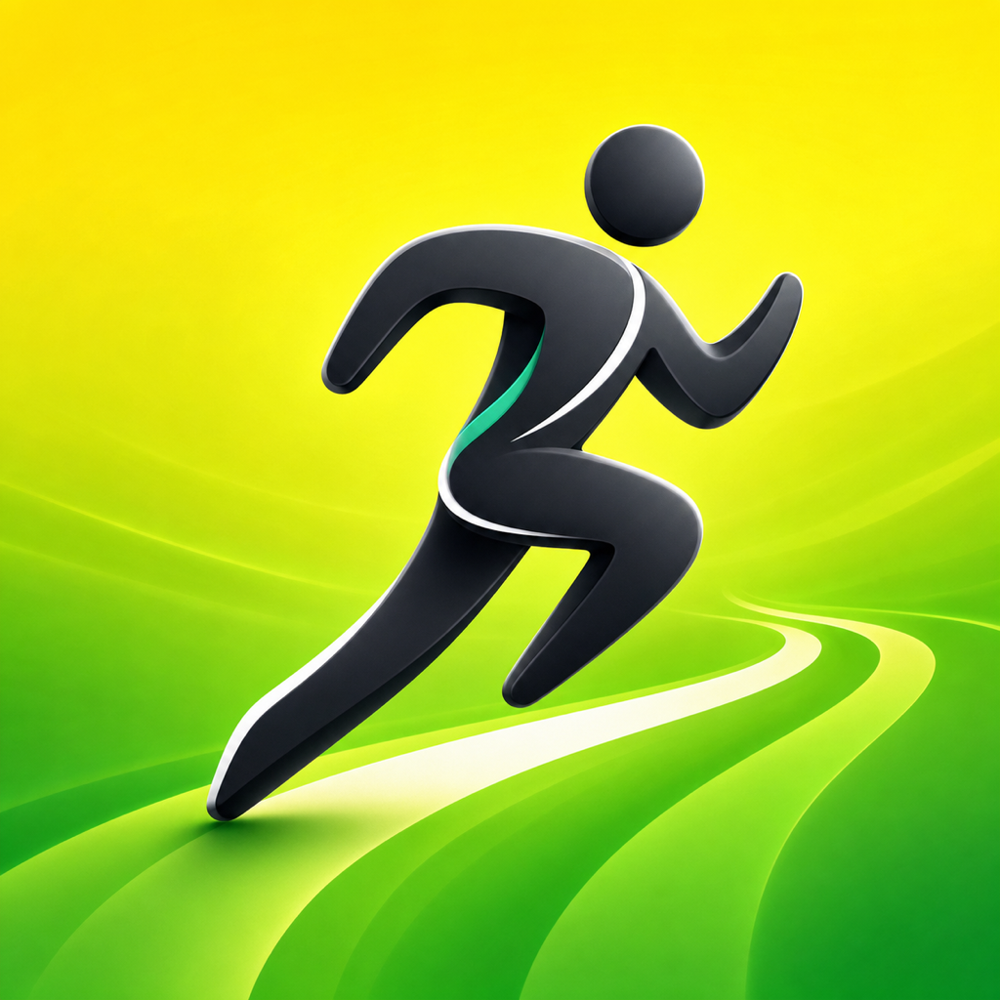
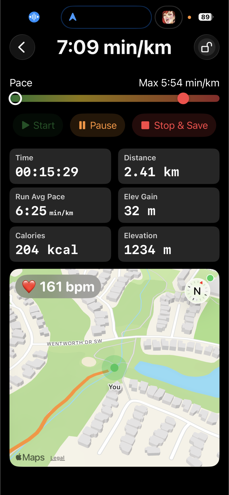
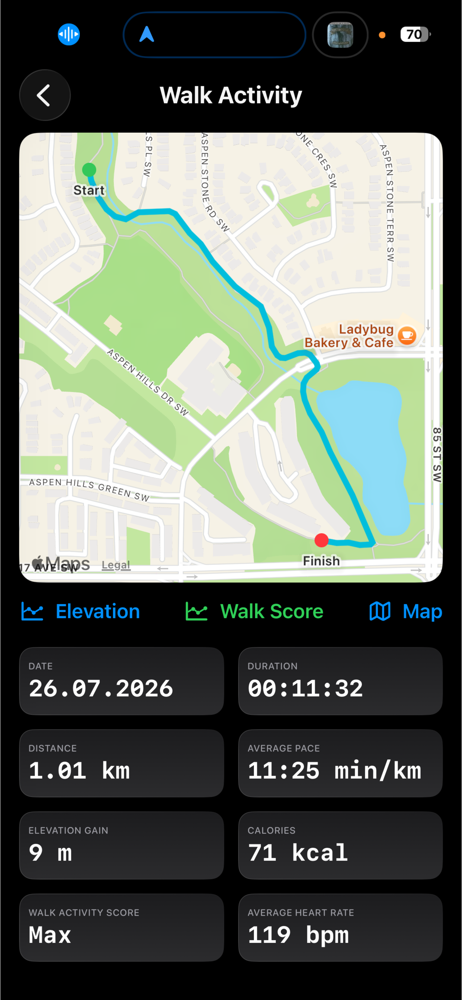
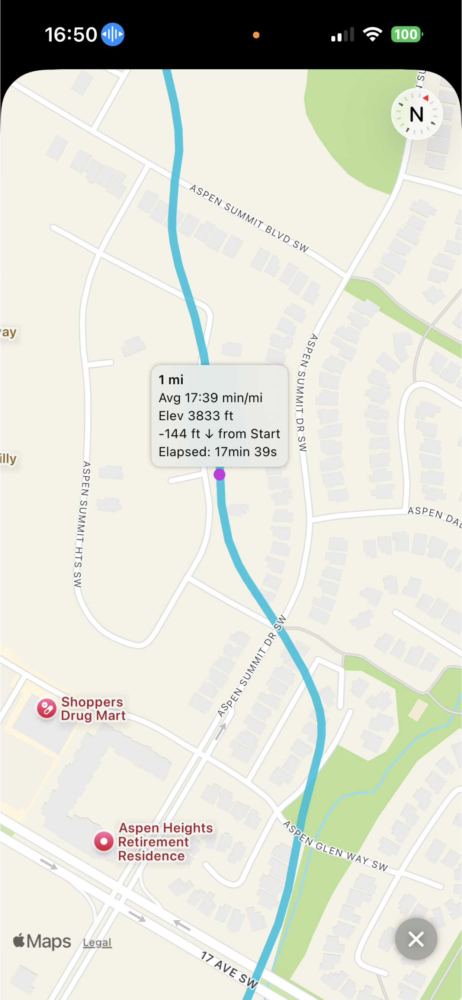
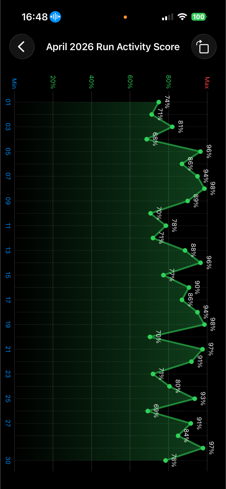
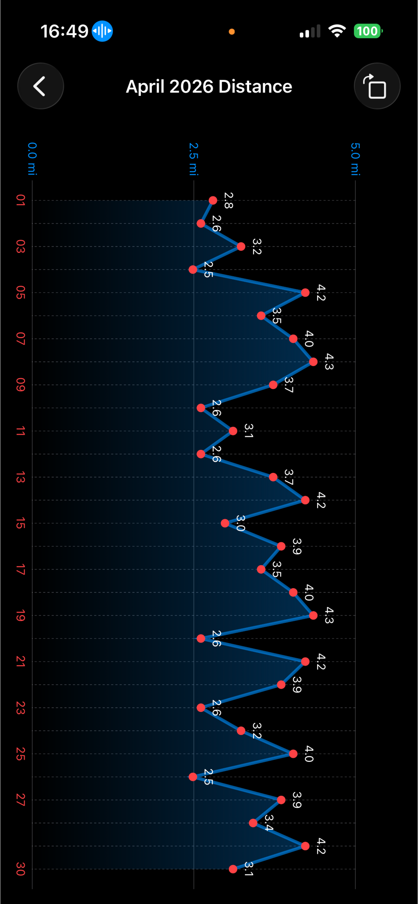
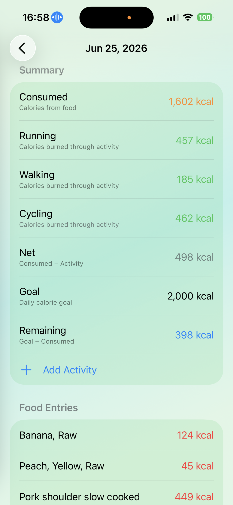
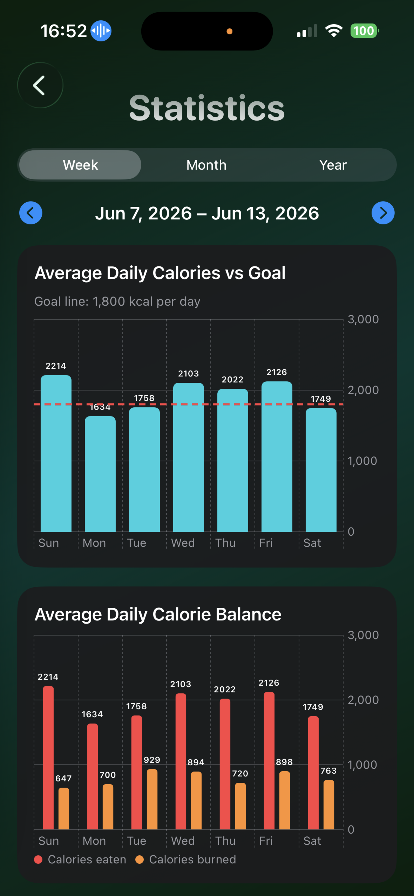
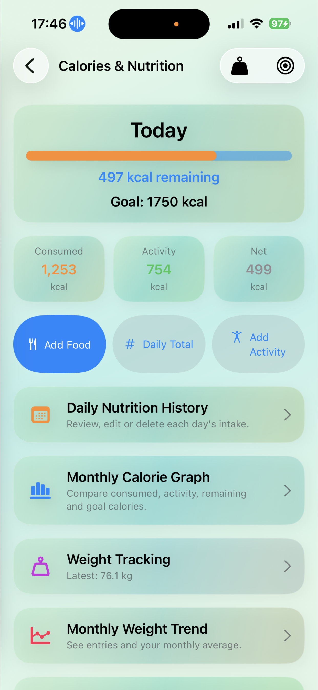
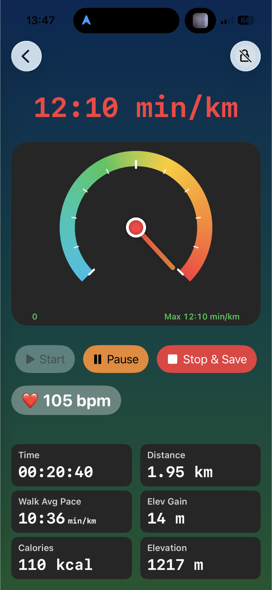

Run Green for iPhoneRun Green – Run. Walk. Improve.
Simple, accurate run, walk, and personal nutrition tracking — with adaptive activity scores, a privacy-first design, and optional online features for food search, activity summaries, private groups, clubs, and challenges.
Run Green helps you run and walk with precision and motivation. Track pace, distance, elevation, calories, heart rate, and effort in one clean view, then follow an adaptive activity score that grows with you. Add food, daily calorie totals, other activities, calorie goals, and weight tracking when you want a fuller picture of your progress.
See your run or walk in real time
Live pace, activity score, time, distance, calories, elevation, and heart rate stay clear and readable while you move. Choose Run or Walk before starting, use optional voice updates, and follow your workout in light or dark mode without unnecessary distractions.

Review your activity instantly
See your final distance, duration, average pace, calories, activity score, heart rate, and elevation as soon as your run or walk ends. Open the map and detailed analysis for route milestones, elevation, splits, and monthly progress.

Replay and explore your route
Zoom into Apple Maps routes with clear start, finish, and per-km/mi segments. Zoom to a segment to inspect distance, pace, and elevation for that part of the activity.

Track your personal benchmark over time
Follow your activity score, weekly totals, and monthly trend charts to see how your fitness evolves. Each run or walk feeds an adaptive score that reflects your effort and gives you a quick way to understand your training balance.

Understand your elevation and terrain
Elevation profiles and distance splits help you see where the climbs and descents were. Compare runs and walks and understand how hills shape your effort.

Track monthly & weekly progress
Visualize your distance trends across the week or month and see how your running and walking volume evolves over time.

Calories, nutrition & weight
Track run and walk calories alongside food, daily calorie totals, and additional activities. Set a daily calorie goal, see your net calories after activity, follow weight trends, and keep a private nutrition history on your device.

See your nutrition statistics clearly
Review weekly, monthly, and yearly nutrition trends in easy-to-read charts. Compare calories eaten with calories burned, follow your daily calorie goal, and understand how activity and food affect your overall calorie balance.

Manage calories, nutrition, and weight
Add food and other activities, set a daily calorie goal, and see consumed, activity, net, and remaining calories together. Review your nutrition history, monthly calorie graphs, weight entries, and weight trends from one private dashboard.

What you get
Designed to help you improve every run and walk — and support your nutrition goals.
Pro monthly subscription
Unlock unlimited runs and walks, detailed analytics, Calories & Nutrition, and long-term adaptive activity scores. Stay motivated with clear progress tracking and practical insights into your activity and nutrition habits.
Includes a 15-day free trial or 20 activities, whichever comes first. Cancel anytime in your App Store account settings.
Start your free trial
Made for runners and walkers worldwide
Run Green includes full English plus 8 additional languages, including activity voice prompts for start, pause, resume, stop, and distance milestones.
Support & privacy
Run Green is built around a simple principle: your data is yours. Run and walk data, nutrition entries, saved foods, calorie goals, and weight records stay on your device by default. If you choose to create an optional account, you can search the shared food catalogue and upload selected activity summaries for your online dashboard, private groups, clubs, and challenges. GPS, elevation, distance, pace, activity-calorie estimates, heart-rate readings, and food data can vary with signal conditions, terrain, devices, product data, and personal settings. Calorie, nutrition, fitness, and heart-rate information is for general guidance only — Run Green is not a medical device.